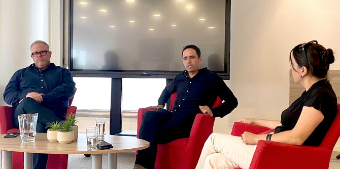
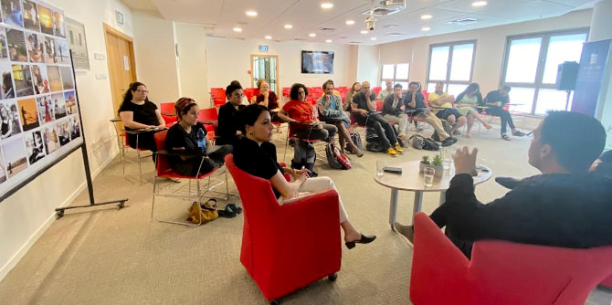

In June 2021, a session on different aspects of the media was convened for the fellows of Cohort 3 of the Mandel Program for Cultural Leadership in the Negev. The event featured
Roi Katz, correspondent and deputy director of content for Radio Tel Aviv and the host of a radio program on economics, and
Almog Boker, correspondent and presenter of the Channel 13 “News Today” program, and a lecturer in media studies at Sapir College.
The conversation with Roi and Almog, which was moderated by Linor Alaluf, a fellow in the program, centered around three main themes and the relations between them: current affairs, culture, and the media. The conversation opened with several dilemmas raised by the coverage of Operation Guardian of the Walls, Israel’s recent military operation against Hamas in Gaza, and with a discussion of the difficulties raised by current affairs coverage in general. Among other questions, the two journalists were asked about some of the ethical challenges raised by media coverage: How do correspondents react to competing and contradictory demands, such as the network directing them to enter a house that has sustained a direct rocket attack, while their own conscience tells them not to violate the family’s privacy in such a manner? How can so many complex events be covered properly with so few correspondents in the field? And how can appropriate news coverage be provided from the scene of the events in the midst of constant rocket attacks?

Next, the conversation turned to the media’s coverage of culture in the Negev: How has local culture been affected by the closure of local newspapers? What are the alternatives? How is it possible for artists and cultural figures to get onto the public’s agenda while overshadowed by the many high-profile cultural activities in the center of Israel?
The participants in the session – fellows of Cohort 3 of the Mandel Program for Cultural Leadership in the Negev and correspondents who grew up in Israel’s south and now work there – are well aware that there is a vibrant and busy cultural scene in the Negev, particularly in Beer Sheva, which in some respects is unique to the area. However, the center of the country is far more prominent in the cultural scene, with more prominent cultural events and activities and more media coverage of culture and the arts. For this reason, the discussion also explored practical aspects of the media and tried to understand the “rules of the game,” asking questions like “what content will be featured in newspapers and what content has no chance?” or “how can media coverage be secured?”
The discussion between the fellows and the two guests – both of whom are media figures who were born and raised in Beer Sheva and began their professional careers at local Negev media outlets – was highly instructive and in-depth. One of the main insights that emerged from the conversation was that a great deal of cultural activity needs the media in order to reach its audience. For this reason, artists and cultural entrepreneurs must invest significant efforts in media relations, becoming familiar with how things work behind the scenes even if they have a natural inclination to stay well away from it. This, the participants concluded, is simply one of the responsibilities of cultural leaders.
{kind=link}
{kind=link}